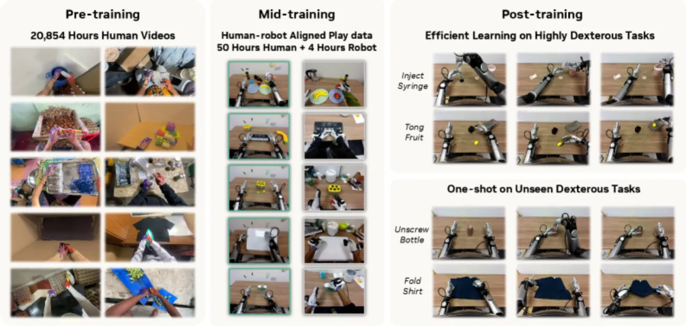
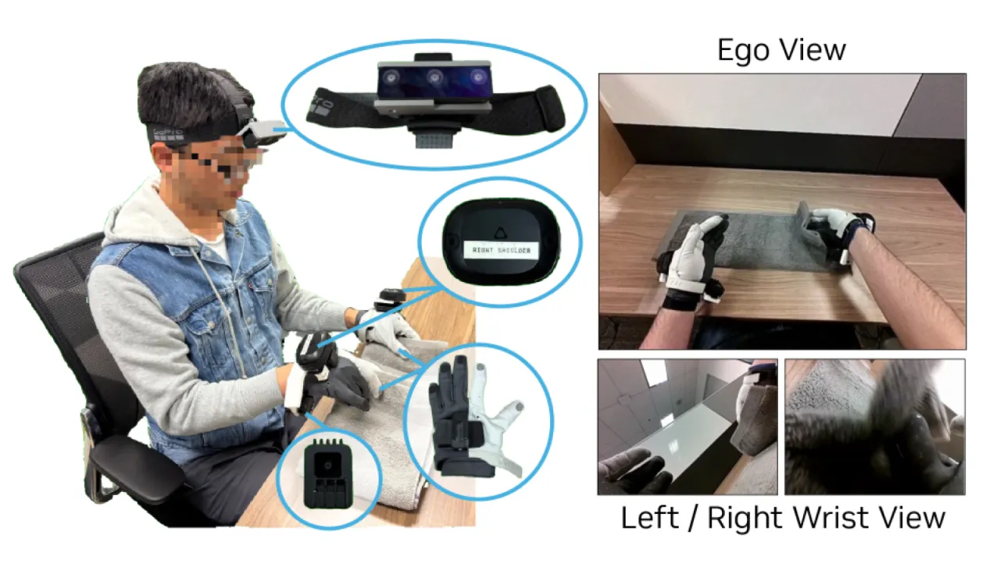
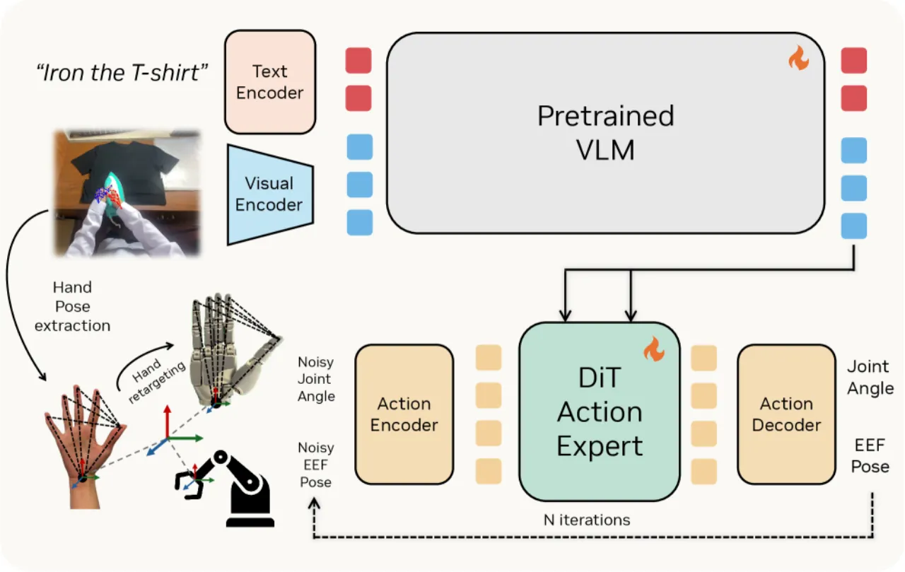
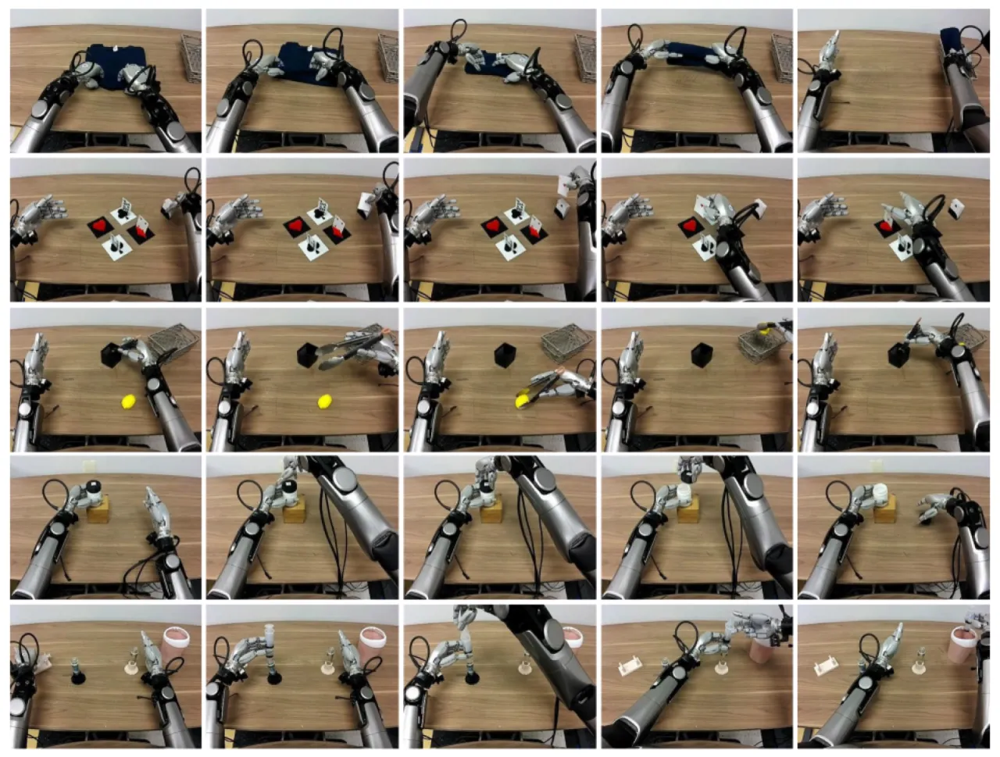
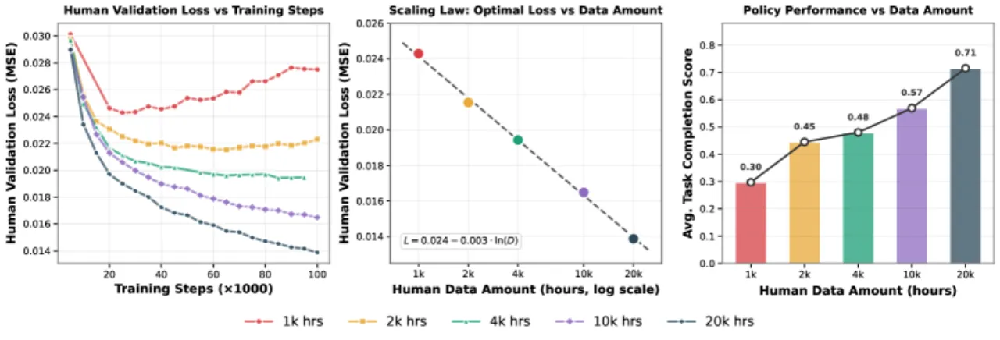
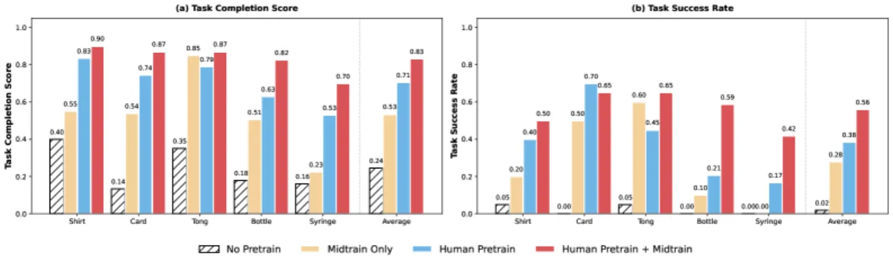

EgoScale 在超过 20,854 小时的第一视角（egocentric）人类操作视频上预训练一个基于 flow matching 的 VLA 模型，发现人类数据规模与验证损失之间存在严格的对数线性 scaling law（R² = 0.9983），并通过轻量级对齐 mid-training 将成功率提升 54%，同时实现跨机器人本体的泛化迁移。
机器人灵巧操作的核心瓶颈在于高质量训练数据的匮乏——遥操作采集成本极高，而人类每天都在无约束环境中自然产生数以万计小时的第一视角操作视频。如何让机器人从这些「免费」的人类行为数据中学习？
"We ask: can large-scale human data meaningfully support complex, dexterous manipulation at scale? … We find that effective transfer is fundamentally a scaling phenomenon."
现有人类-机器人迁移研究普遍存在两大局限：

EgoScale 将人类-机器人迁移分解为三个递进阶段：大规模人类预训练（Stage I）→ 对齐 mid-training（Stage II）→ 少量机器人后训练（Stage III），核心是设计跨本体通用的动作表示与轻量级适配接口。


使用 20,854 小时第一视角视频，以 相对腕部运动（relative SE(3) end-effector pose，公式：ΔWᵗ = (W₀ʷ)⁻¹ Wᵗʷ）和 retargeted 22-DoF 灵巧手关节动作作为监督信号。手部动作通过基于 CasADi/IPOPT 的非线性优化（每帧求解，带关节限位约束，指数滤波去抖）从 21 关键点 SE(3) 变换中重定向到 Sharpa 手的 URDF 关节空间。训练配置：256 块 GB200 GPU，100K steps，batch size 8,192，学习率 5×10⁻⁵。
利用 50 小时人类 + 4 小时机器人的配对视角数据（344 个桌面任务，Vive 追踪器记录腕部，Manus 手套记录手部），冻结视觉-语言骨干，解冻 vision encoder 和 DiT action expert 进行适配。这一阶段的核心作用是：将预训练中学到的通用动作先验"对齐"到机器人控制空间，同时通过共享 SE(3) 腕部表示保留跨本体泛化能力。
对比三种手部动作表示：joint-space（22-DoF 关节角）、wrist-only（仅 SE(3) 腕部）、fingertip-based（指尖位置）。实验表明 wrist-only 在接触敏感任务中表现最差（关节角精度缺失），fingertip-based 误差累积不稳定，joint-space 在所有任务中最为一致，被选为默认表示。

实验在 Galaxea R1 Pro（22-DoF 灵巧手）和 Unitree G1（7-DoF 三指手）两个机器人本体上进行，每任务 10 次独立评估（多实例任务 16 次），评分采用图像叠加初始化保证一致性。
"A clear log-linear scaling law: validation loss follows L = 0.024 − 0.003 · ln(D)" with "R² of 0.9983"，其中 D 为人类数据小时数。
task completion score 从 1k 小时的 0.30 提升至 20k 小时的 0.71，且"在探索范围内未见饱和迹象"（no signs of saturation in the explored regime）。

| 方法 | Shirt Rolling | Card Sorting | Tong Use | Bottle Cap | Syringe |
|---|---|---|---|---|---|
| No Pretraining (baseline) | — | — | — | — | — |
| Human Pretraining only | 相对 baseline +55% 平均成功率 | ||||
| Human Pretrain + Mid-Training | 相对 baseline +54% 平均成功率（最终系统） | ||||
注：论文以条形图呈现各任务的 task completion score，未给出逐任务数字表格；上表数字均直接引用原文摘要与正文。

mid-training 使模型获得共享运动原语（shared motion primitives），仅用单个机器人演示即可泛化到新任务：
在 Stage II mid-training 中加入少量 G1 play data，通过 embodiment-specific MLP 适配器适配 7-DoF 手部接口，相比 G1 直接训练基线实现 30% 绝对提升，且行为更流畅。
joint-space 手部动作在所有 5 个任务中均优于 wrist-only 和 fingertip-based 表示，尤其在需要精细接触调控的任务（Bottle Cap、Syringe）中差距最为显著。
scaling law 仅在 1k—20k 小时数据范围内验证，"no signs of saturation in the explored regime"——即 20k 小时以外的规模效应尚无实证，计算成本（256 × GB200 GPU）也制约进一步探索。
大规模数据依赖"off-the-shelf SLAM and hand-pose estimation pipelines"，其估计质量因场景而异，噪声容限（robustness threshold）未量化。尽管论文认为规模与多样性可以补偿噪声，但极端噪声情况下的失效模式未有讨论。
五个评估任务均为桌面场景（tabletop manipulation）；移动操作、开放世界场景以及与运动（locomotion）结合的场景未涉及，限制了结论的泛化范围。
Stage I 预训练需要 256 块 GB200 GPU 运行 100K steps，这一规模对学术小实验室和工业小团队存在较高门槛。论文未提供缩减计算预算的替代方案。